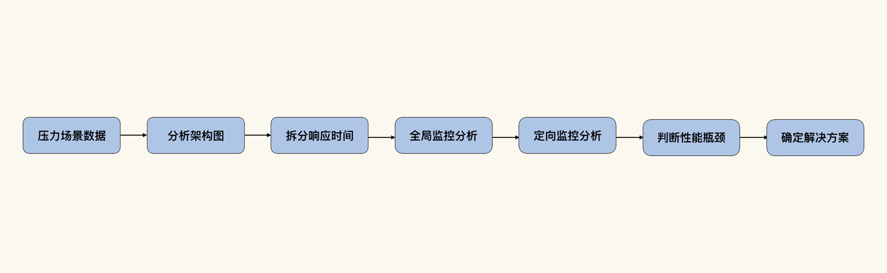

- 00 开篇词 打破四大认知局限，进阶高级性能工程师.md.html
- 01 性能工程：为什么很多性能测试人员无法对性能结果负责？.md.html
- 02 关键概念：性能指标和场景的确定.md.html
- 03 核心分析逻辑：所有的性能分析，靠这七步都能搞定.md.html
- 04 如何构建性能分析决策树和查找瓶颈证据链？.md.html
- 05 性能方案：你的方案是否还停留在形式上？.md.html
- 06 如何抽取出符合真实业务场景的业务模型？.md.html
- 07 性能场景的数据到底应该做成什么样子？.md.html
- 08 并发、在线和TPS到底是什么关系？.md.html
- 09 如何设计全局和定向监控策略？.md.html
- 10 设计基准场景需要注意哪些关键点？.md.html
- 11 打开首页之一：一个案例，带你搞懂基础硬件设施的性能问题.md.html
- 12 打开首页之二：如何平衡利用硬件资源？.md.html
- 13 用户登录：怎么判断线程中的Block原因？.md.html
- 14 用户信息查询：如何解决网络软中断瓶颈问题？.md.html
- 15 查询商品：资源不足有哪些性能表现？.md.html
- 16 商品加入购物车：SQL优化和压力工具中的参数分析.md.html
- 17 查询购物车：为什么铺底参数一定要符合真实业务特性？.md.html
- 18 购物车信息确定订单：为什么动态参数化逻辑非常重要？.md.html
- 19 生成订单信息之一：应用JDBC池优化和内存溢出分析.md.html
- 20 生成订单信息之二：业务逻辑复杂，怎么做性能优化？.md.html
- 21 支付前查询订单列表：如何分析优化一个固定的技术组件？.md.html
- 22 支付订单信息：如何高效解决for循环产生的内存溢出？.md.html
- 23 决定容量场景成败的关键因素有哪些？.md.html
- 24 容量场景之一：索引优化和Kubernetes资源分配不均衡怎么办？.md.html
- 25 容量场景之二：缓存对性能会有什么样的影响？.md.html
- 26 稳定性场景之一：怎样搞定业务积累量产生的瓶颈问题？.md.html
- 27 稳定性场景之二：怎样搞定磁盘不足产生的瓶颈问题？.md.html
- 28 如何确定异常场景的范围和设计逻辑？.md.html
- 29 异常场景：如何模拟不同组件层级的异常？.md.html
- 30 如何确定生产系统配置？.md.html
- 31 怎么写出有价值的性能报告？.md.html
- 我们这个课程的系统是怎么搭建起来的？.md.html
- 结束语 做真正的性能项目.md.html
- 捐赠
03 核心分析逻辑：所有的性能分析，靠这七步都能搞定
你好，我是高楼。
我之前看过一些性能分析方法论，比如SEI负载测试计划过程、RBI方法论、性能下降曲线分析法等等，这些观点很多只是停留在概念和方法论的层面，并没有具体的落地细节，让人看了之后也不知道怎么进一步做下去。像这样的方法论，在我看来完全没有必要存在。
在这里我也延伸一下，国外的一些理念在被翻译成中文之后，有很多只是停留在被知道、被了解的阶段，并没有被广泛应用过。像我们刚才提到的那些方法论，可能有很多从事性能行业的人都不知道。可见，这样的方法论不管好不好，都是没有受众基础的。而那些少数知道的人，也只是将这些理论翻译过来作为大帽子扣在某些文档上，但具体干起活来，该怎么干还怎么干。
如果我只是这样空泛地跟你说这些方法论不好使，那就是骂街了，作为文化人，还是得有理有据才行。下面我们就来看一段具体的内容。
你在任何一个搜索工具（比如度娘、谷歌、360等等）上搜“性能测试方法论”这几个关键字，基本上都可以看到很多复制来复制去的内容。而这些内容基本上都是在描述一个测试的实施过程，并且这些实施过程也都基本停留在测试的阶段。比如下面这几段关于“SEI负载测试计划过程”的描述（内容可能有点长，不过这不是我们这节课的重点，你可以不用那么仔细去看）。
SEI load Testing Planning Process是一个关注于负载测试计划的方法，其目标是产生“清晰、易理解、可验证的负载测试计划”。
SEI负载测试计划过程包括6个关注的区域：目标、用户、用例、生产环境、测试环境和测试场景。
①生产环境与测试环境的不同：由于负载测试环境与实际的生产环境存在一定的差异，因此，在测试环境上对应用系统进行的负载测试结果很可能不能准确反映该应用系统在生产环境上的实际性能表现，为了规避这个风险，必须仔细设计测试环境。
②用户分析：用户是对被测应用系统性能表现最关注和受影响最大的对象，因此，必须通过对用户行为进行分析，依据用户行为模型建立用例和场景。
③用例：用例是用户使用某种顺序和操作方式对业务过程进行实现的过程，对负载测试来说，用例的作用主要在于分析和分解出关键的业务，判断每个业务发生的频度、业务出现性能问题的风险等。
从上面的描述可以看到，这里面都是偏向“测试”执行过程的内容。这个理论的提出者是Mark McWhinney，1992年，他在SEI和John H. Baumert写了一个类似CMMI的内容：《Software Measures and the Capability Maturity Model》。
在这份304页的白皮书里，Mark McWhinney描述了四个级别的软件度量和成熟度模型，分别是：可重复级、可定义级、可管理级和可优化级，其中描述的也都是过程、影响、成本、质量、稳定性这些内容。
像这样的定义本身没有问题，但如果是像CMMI那样，企业只是拿个证，并不遵循它来做具体的项目，那这个理论就没有意义了。
在性能行业中，我们想要实际落地，可是从SEI中又得不到具体的指引，这才是问题。因为我们要有具体的性能容量、性能瓶颈的分析落地，才能体现性能项目最终的价值。而这一部分的缺失，使得很多性能从业人员没有可参考的成长路径。（至于其他的性能方法论，我就不再一一解析了。你如果有兴趣，可以查一查。）
这也是为什么在进入性能分析案例之前，我要和你先聊一下性能分析的核心逻辑。
在写《性能测试实战30讲》专栏中的第6讲时，我觉得已经把所有的核心分析逻辑都写完了，有一种呕心沥血的感觉，我也觉得自己不会再写分析逻辑了。可是在写这个专栏时，我还是觉得有些不够。
因为现在的性能工程师，最缺的就是分析思路。有很多人会各种工具，但是这些分析工具的数据拿出来应该如何组装成一串逻辑，又是很多人的难点。
如果从“测试”这个行业来看，性能分析的完整案例可以说非常少见。如果从运维或其他职位的角度来看的话，倒还是有一些的。但是纵观大部分的性能案例，都缺少一个提炼到更高一层的分析方法论。
所以，我觉得一个性能分析专栏，一定要有这样一讲内容来把分析逻辑说清楚。
不过，在写这一讲时，我没有之前那种呕心沥血的感觉了。因为我们这一讲的宗旨就是，把性能分析思路给固定下来。是的，你没有看错，我说的是“固定”下来，也就是说，这一讲之后，我们再也没有其他的分析思路了。
我把这个固定的分析思路称为“RESAR性能分析七步法”。（请你注意，这只是RESAR性能工程的一部分，并不是整个RESAR性能工程。）
RESAR性能分析七步法
跟着RESAR性能工程理论，我们的分析逻辑是这样的：

第一步：压力场景数据。
在我看来，压力工具提供的数据只有两个曲线最为重要：一个是TPS（你要是喜欢，也可以叫其他名字，像RPS、HPS、CPS之类，纠结名称并不是我们的关键），另一个是响应时间。
不管是什么压力工具，只要能给出这两个曲线即可，即便是你自己开发的多线程压力工具也无所谓。不管是线程、协程，只要可以根据业务逻辑发出相应的压力即可。
为什么说TPS和响应时间曲线最为重要，那其他的曲线，比如说吞吐量、点击率、错误率这些呢？错误率是有错误的时候才需要看的，这一点我想你应该不会有异议。而吞吐量、点击率之类的曲线，也必然会和TPS曲线是相同的趋势，所以我们不需要再单独分析。
因此在第一步，我们只需要从压力场景中获取TPS和响应时间曲线就可以了。
第二步：分析架构图。
接着是分析架构图，这一步我们需要做的是，看压力流量的路径。这主要是为了看分析链路的前后关系。如果业务逻辑复杂，部署也复杂，那我们就可以分为业务路径和部署路径。如果不复杂，那画一个路径就够了。
第三步：拆分响应时间。
在这里，我要着重跟你强调一下，在性能分析过程中，拆分响应时间是分析的关键起点。有很多人在看到响应时间高的时候，总是不往下拆分就开始猜测系统的性能瓶颈在哪里。如果你也是这样，这种思路你一定要转换过来，不要总是在现象上纠结。
第四步：全局监控分析。
话说现在很多看似拥有全局监控能力的工具平台，实际上还是会缺失一些计数器。所以，我们一定要根据性能分析决策树，来补全性能计数器。如果获取这些计数器，在当前的工具平台上实在有困难，那就通过其他的工具或命令来补充，这一点你要特别注意。
之前我给一个银行客户分析问题的时候，他们说各个层面的监控数据都有。但实际情况却是，与问题相关的计数器，他们是缺失的。这样的情况其实很普遍，很多公司往往只关注大层面的覆盖，忽视了具体计数器的完备。
“全局监控分析”‘这一步有个关键，就是你要对你所看到的计数器有足够的了解。如果你看了数据之后，没有任何反应，那就说明你还没有达到分析的能力。这个时候，你要么就是来看专栏，要么就是去看书，要么就是去查度娘（虽然度娘在这个时候也不好使），要么就是放弃。
那我们怎么知道一个全局计数器有没有问题呢？这就需要功底了，这些就是我经常说的计算机基础知识。性能分析的范围很大，不见得与它相关的所有知识的头上都会标着“性能”两个字。
经常会有人问GC频率达到多少是合理的？这就是很难回答的问题。只要GC不影响系统容量，那就是可以的。所以，我们得先看GC和系统容量曲线之间的关联关系，然后再做判断。
在性能分析中，没有哪个计数器可以直接跳出来告诉我们说“我有病！”，只能靠我们自己去判断它有没有病。
第五步：定向监控分析。
看了全局监控计数器之后，我们通过判断分析，知道哪个方向上有问题后，才去做定向的监控。千万不要一开始就弄什么代码层分析、具体参数调整、SQL调整啥的。不仅乱，而且不一定见成效。
在“定向监控分析”这一步有个关键判断，就是能不能和上面的全局监控计数器对应。当我们想找一个栈的时候，要知道为什么要去找栈；当我们要判断IO参数有问题时，也要知道为什么要去找IO参数。
这样一来，前后的逻辑关系就形成了我一直在RESAR性能工程中强调的一个词——证据链。
第六步：判断性能瓶颈点。
有了证据链，就一定要来到性能瓶颈点的判断过程。比如说，我们在栈中判断有没有锁的存在，那至少你要在栈中找到这个锁有哪些线程在等待，哪个线程持有。再比如说，我们要判断一个SQL慢，那至少你要把SQL的执行过程拿出来，看到底是哪一步有问题。
有了对性能瓶颈的判断，再往下走就是要找到解决方案。
第七步：确定解决方案。
其实，知道瓶颈点在哪里，也并不一定知道有什么解决方案。就像有人看到了栈中有锁，但也不知道怎么解锁；有人知道SQL慢，但也不知道如何优化SQL一样。不过，这一步是性能项目体现价值的关键点。不管前面做得有多么辛苦，给出解决方案总是我们性能人员的重点。
上述就是RESAR性能分析七步法，它在每个性能分析的案例中都会被使用。在具体的案例中，我们可能会选择其中的几步来做。当然，每个案例都走七步也是完全可以的。只是在我们分析的过程中，如果已经有了明确的问题点，就不用再往回分析了。
比如说，如果我们已经知道了问题点，直接定向监控分析就可以了，不用再走第四步。还有就是，如果性能瓶颈不会导致响应时间长，而是出现其他的问题，可能就不需要走第三步。这些内容你将在后面课程的案例中看到具体的应用。
总结
我们这节课讲的性能分析的核心逻辑，是RESAR性能工程中具体的性能瓶颈分析指导。没有它，就没有分析的具体落地步骤。但是如果在落地时不遵循这个核心逻辑，它也就没有价值了。
在这七步法中，会涉及到对应的知识体系，像在构建性能分析决策树、查找性能瓶颈证据链时，我们就需要强大的技术基础知识做支撑。如果一个人不具备全部的基础知识也没关系，可以组织一个团队共同来做这件事情。
对于我来说，RESAR性能分析七步法，是我做任何一个性能瓶颈定位时必须要依赖的逻辑，它帮助我解决了很多以前没有遇到过的问题。如果你想应用这个过程，那就请记住我一直强调的一句话：在性能分析中，你只需要知道下一步做什么就可以了，我们终会找到瓶颈的具体原因。
课后作业
最后，请你思考两个问题：
- 为什么在性能项目中需要RESAR性能分析七步法？
- 在你之前做过的调优案例中，用的是什么样的分析逻辑？
欢迎你在留言区写下你的思考和答案，和我交流讨论。如果你觉得这节课有收获，也欢迎把它分享给你身边的朋友，他们的一些想法或许会让你有更大的收获。我们下节课见！
关于课程读者群
点击课程详情页的链接，扫描二维码，就可以加入我们这个课程的读者群哦，希望这里的交流与思维碰撞能帮助你取得更大的进步，期待你的到来～
© 2019 - 2023 Liangliang Lee. Powered by gin and hexo-theme-book.